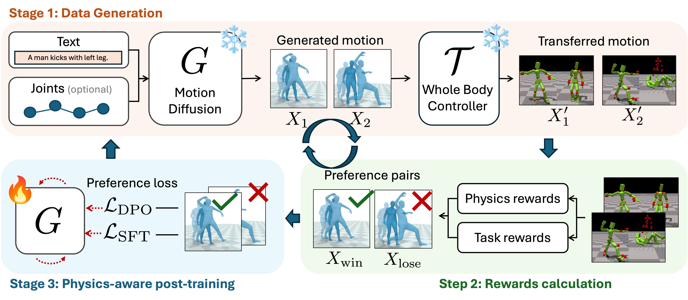

Recent progress in text-conditioned human motion generation has been largely driven by diffusion models trained on large-scale human motion data. Building on this progress, recent methods attempt to transfer such models for character animation and real robot control by applying a Whole-Body Controller (WBC) that converts diffusion-generated motions into executable trajectories. While WBC trajectories become compliant with physics, they may expose substantial deviations from original motion. To address this issue, we here propose PhysMoDPO, a Direct Preference Optimization framework. Unlike prior work that relies on hand-crafted physics-aware heuristics such as foot-sliding penalties, we integrate WBC into our training pipeline and optimize diffusion model such that the output of WBC becomes compliant both with physics and original text instructions. To train PhysMoDPO we deploy physics-based and task-specific rewards and use them to assign preference to synthesized trajectories. Our extensive experiments on text-to-motion and spatial control tasks demonstrate consistent improvements of PhysMoDPO in both physical realism and task-related metrics on simulated robots. Moreover, we demonstrate that PhysMoDPO results in significant improvements when applied to zero-shot motion transfer in simulation and for real-world deployment on a G1 humanoid robot.

Overview of PhysMoDPO. Given a conditioning signal (text and optional joint controls), we sample multiple motions X from a pretrained generator. A fixed physics-based tracking policy then projects each sample into a simulated trajectory X'. We compute physics rewards and task rewards on X', construct preference pairs, and finetune the generator with DPO. This generation--finetuning procedure can be iterated.
[1] Guo et al. Generating Diverse and Natural 3D Human Motions From Text. CVPR, 2022.
[4] Xie et al. OmniControl: Control Any Joint at Any Time for Human Motion Generation. ICLR, 2024.
[5] Li et al. Object Motion Guided Human Motion Synthesis. SIGGRAPH Asia, 2023.
@article{zhang2026PhysMoDPO,
title={PhysMoDPO: Physically-Plausible Humanoid Motion with Preference Optimization},
author={Zhang, Yangsong and Muraleedharan, Anujith and Akizhanov, Rikhat and Butt, Abdul Ahad and Varol, G{\"u}l and Fua, Pascal and and Pizzati, Fabio and Laptev, Ivan},
journal={arXiv},
year={2026},
}
We thank helps from public code like OmniControl, ProtoMotions, MotionStreamer, stmc, BeyondMimic, HOVER, etc.
© This webpage was in part inspired from this template.